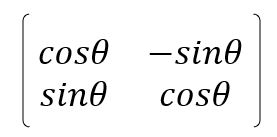

接續〈NumPy 與海龜繪圖（一）〉，想要認識海龜繪圖的原理，直接來實作一隻海龜是最快的方式，基本上它只要兩個成員就可以了，目前座標與方向。
在資料的表現上，直覺會想到座標是二維座標，而方向用角度來表示，不過，採用向量來表現會更直覺，也就是座標與方向都用向量來表現。
使用向量來代表座標的話，位移也就可以使用向量來表示，例如，若原本座標向量是 (x, y)，位移向量為 (dx, dy)，位移後的座標就是 (x, y) + (dx, dy)。
想使用向量來代表方向的話，可以使用單位向量，例如，若 (1, 0) 表示朝 x 軸正方向的方向向量，若前進 leng，位移向量就是 (1, 0) * leng，如果要旋轉方向，只要有個旋轉矩陣，因為是二維平面，只會繞 z 軸旋轉，旋轉矩陣就是：

透過 NumPy 可以很簡單地實現：
def rotate(vt, angle):
theta = np.radians(angle)
c, s = np.cos(theta), np.sin(theta)
rm = np.array([
[c, -s],
[s, c]
])
return rm @ vt # @ 是矩陣相乘
既然可以用向量來表示座標、方向與位移等，要實現一隻海龜就簡單了：
class Turtle:
def __init__(self, x = 0, y = 0, angle = 0):
self.coordinateVt = np.array([x, y])
self.headingVt = rotate(np.array([1, 0]), angle)
def forward(self, leng):
self.coordinateVt = self.coordinateVt + self.headingVt * leng
def turn(self, angle):
self.headingVt = rotate(self.headingVt, angle)
可以用 Turtle 來取代 turtle 模組，例如〈NumPy 與海龜繪圖（一）〉最後的範例可以改寫如下：
import numpy as np
import matplotlib.pyplot as plt
class Turtle:
def __init__(self, x = 0, y = 0, angle = 0):
self.coordinateVt = np.array([x, y])
self.headingVt = rotate(np.array([1, 0]), angle)
def forward(self, leng):
self.coordinateVt = self.coordinateVt + self.headingVt * leng
def turn(self, angle):
self.headingVt = rotate(self.headingVt, angle)
def rotate(vt, angle):
theta = np.radians(angle)
c, s = np.cos(theta), np.sin(theta)
rm = np.array([
[c, -s],
[s, c]
])
return rm @ vt
def forward_left(_, t, leng, a):
t.forward(leng)
t.turn(a)
return t.coordinateVt
forward_left = np.frompyfunc(forward_left, 4, 1)
leng = 200
a = 170
n = 37
step = np.arange(n)
coord = forward_left(step, Turtle(), leng, a)
np_pos = np.array(coord.tolist())
x = np_pos[:,0]
y = np_pos[:,1]
plt.gca().set_aspect(1)
plt.plot(x, y)
plt.show()
你有察覺什麼嗎？在實作 Turtle 的 forward 時，其實你是在累加位移量：
self.coordinateVt = self.coordinateVt + self.headingVt * leng
位移量實際上是來自於海龜的方向向量，方向向量會受到角度影響，就這個畫星形的例子來說，其實動作很規律，前進、轉動、前進、轉動，既然如此，可不可以先整組處理角度，再整組處理位移量？
step = np.arange(n)
angle = step * a
dx = leng * np.cos(angle)
dy = leng * np.sin(angle)
最後只要將 dx、dy 的累計加總各自計算出來：
x = np.cumsum(dx) # cumsum 可以計算累計加總
y = np.cumsum(dy)
將 x、y 餵給 plot 不就好了？也就是說，以下的程式就可以畫出星狀圖了：
import numpy as np
import matplotlib.pyplot as plt
leng = 200
a = np.radians(170)
n = 37
step = np.arange(n)
angle = step * a
dx = leng * np.cos(angle)
dy = leng * np.sin(angle)
x = np.cumsum(dx)
y = np.cumsum(dy)
plt.gca().set_aspect(1)
plt.plot(x, y)
plt.show()
使用 NumPy 其實是種重新看待需求的過程，將一切都看成是資料的處理，有時你不會直接面對資料，如何找出資料才是難處，然而也是使用 NumPy 這類工具真正有趣的地方。